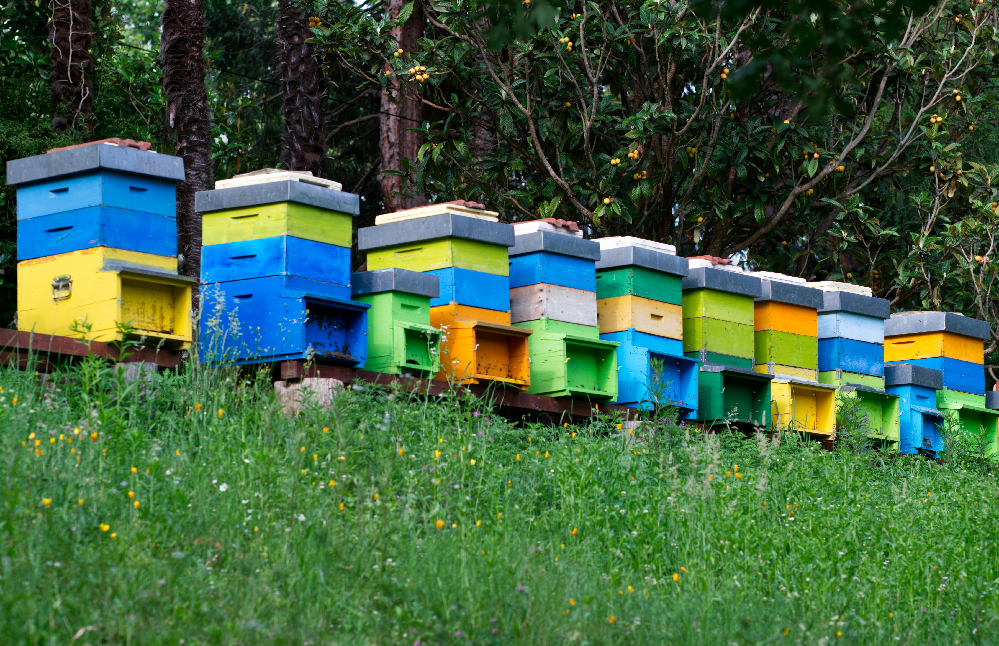

Les Ruchers de l’Orée
Bienvenue sur notre site
Nous produisons du miel bio dans les Cévennes,
en pleine nature, avec amour et passion.
Nous produisons du miel bio dans les Cévennes,
en pleine nature, avec amour et passion.
Nichés dans les collines ensoleillées des Cévennes, nos ruchers sont installés loin de toute pollution, au cœur d'une nature sauvage et préservée. Nous élevons nos abeilles avec respect et douceur, selon les principes de l'apiculture biologique.
Chaque pot de miel reflète la richesse florale de notre région, avec des saveurs uniques liées aux saisons et aux floraisons naturelles.
